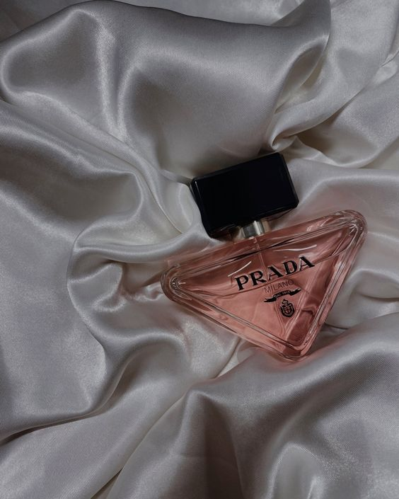

Founding Tooled leather handbag made by Prada, 1935-45 (RISD Museum) The company started in 1913 by Mario Prada and his brother Martino as Fratelli Prada, a leather goods shop in Milan.[5][6] Initially, the shop sold animal goods, imported English steamer trunks, and handbags. Mario Prada did not believe women should have a role in business, so he prevented female family members from entering his company. Ironically, Mario's son had no interest in the business, so it was Mario's daughter Luisa who succeeded Mario and ran Prada for almost twenty years. Luisa's daughter, Miuccia Prada, joined the company in 1970, eventually taking over from Luisa in 1978. [citation needed] Miuccia began making waterproof backpacks out of Pocono, a nylon fabric. [5] She met Patrizio Bertelli in 1977, an Italian who had begun his own leather goods business at the age of 24, and he joined the company soon after. He advised Miuccia on company business, which she followed. It was his advice to discontinue importing English goods and to change the existing luggage.[citation needed]
A set of numbered Exclusive "artisan fragrances" was first offered by Prada at their boutiques and select department stores in 2003. Each scent focused on a single note—Iris, Orange Flower, Tuberose, Violet, etc. Additions to this line were made again in 2007 and 2010. Prada's first mass market fragrance offering, Prada Eau de Parfum, was released in 2004. The Prada "Ephemeral Infusion" line, which highlighted some of the notes from the Prada Exclusive line and featured more costly ingredients, was introduced in 2007 with Infusion d'Iris. Prada fragrances are produced in conjunction with Puig
Prada relaunches the iconic Prada America's Cup sneaker first conceived ' in 1997 for the Luna Rossa team with its original silhouette and dual fabrication o f textile and leather. Soft yet durable leather and innovative, breathable bike fabric combine in this design inspired by the sailing world, completed by an oversized rubber sole.